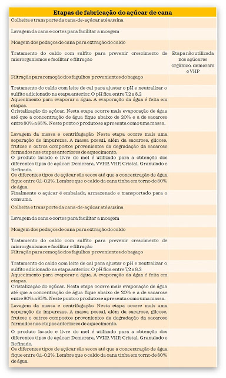

Os açúcares provenientes da cana de açúcar são todos muito semelhantes. Tão semelhantes que, do ponto de vista nutricional, praticamente nenhum é melhor que outro, sejam eles mais claros, mais escuros, mais finos, com cristais maiores, mais baratos, mais caros, outros muito mais caros etc. Em uma colher de açúcar qualquer que seja, a maior parte sempre será sacarose, independentemente da intensidade de beneficiamento recebido (Figura 1).

A sacarose é sintetizada apenas pelos vegetais. Ela é encontrada em pequenas quantidades em todas as partes das plantas, porque é a forma como os vegetais fazem o transporte da glicose, sintetizada nas folhas, para o restante da planta. Há razões químicas para isso: a sacarose é menos reativa e exerce menor força osmótica que a glicose. Uma parte da glicose sintetizada nas folhas é convertida em frutose. Uma enzima específica une uma molécula de glicose a uma de frutose formando a sacarose, que então é destinada para outras partes da planta. Quando a sacarose chega ao seu destino ela é hidrolisada liberando novamente a glicose e a frutose. Parte da frutose é reconvertida em glicose. A glicose é então utilizada para produção de energia, síntese de substâncias essenciais para a vida e crescimento do vegetal (proteínas, celulose, pectina etc) ou armazenada na forma de amido. A Figura 2 ilustra a distribuição e o percurso da sacarose na planta.

Existem poucas fontes vegetais de sacarose no mundo, isto é, vegetais cujos teores de sacarose sejam elevados a ponto de sua extração ser economicamente viável. A principal é, sem dúvida, a cana-de-açúcar (um caule), seguida da beterraba. Inclusive, o Brasil é um grande produtor e consumidor de açúcar-de-cana.
A diferença entre os açúcares produzidos a partir da cana de açúcar é devido à etapa na qual são retirados durante o processo de fabricação. De acordo com esta etapa, eles podem ter um pouco mais de umidade e de impurezas. Entretanto, nunca poderão ter umidade superior a 2% devido à possibilidade de deterioração. O teor de sacarose deve estar entre 98,5 e 99,8%, dependendo do tipo de açúcar. As impurezas consistem em pigmentos que conferem cor, produtos da degradação da sacarose, minerais, terra, areia e outros materiais não orgânicos geralmente provenientes da colheita da cana-de-açúcar. Os materiais não orgânicos são agrupados e detectados como cinzas (minerais, terra, areia etc.), devendo estar entre 0,04 e 0,2%.
O processo de fabricação do açúcar consiste, basicamente, na evaporação da água e retirada das impurezas do caldo de cana. O caldo de cana bruto contém entre 74% e 82% de água, entre 15% e 18% de sacarose e uma quantidade pequena de outras substâncias (ceras, gorduras, proteínas, gomas, pectinas, pigmentos, minerais) e impurezas/sujidades não retiradas na lavagem inicial da cana. Após a eliminação das impurezas e de quase toda a água, o açúcar fica com mais de 98% de sacarose, alguns minerais e em torno de 0,1% de umidade. A presença de vitaminas é descartada, pois são destruídas pelo calor e/ou eliminadas com as proteínas e gorduras nos processos de clarificação.
Sendo assim, a composição mineral dos açúcares deve ser condizente com a composição mineral das canas e com os processos de fabricação. Diversos pesquisadores estudaram a composição de caldos de cana e observaram variação em suas composições dependendo da variedade da cana e do local de cultivo. Em um destes estudos, os pesquisadores analisaram 16 tipos de caldos de cana e apresentaram as faixas de variação dos teores de alguns minerais importantes do ponto de vista nutricional, conforme ilustrado na Figura 3.

A despeito da quantidade máxima de minerais presentes nos caldos de cana, dificilmente todos poderão ser encontrados nos açúcares. Durante o processamento há etapas que adicionam metais ao caldo, especialmente cálcio e fósforo, e etapas que possibilitam eliminação de minerais e quaisquer outras substâncias que não sejam a sacarose. A Figura 4 ilustra o processamento dos açúcares.
Os agentes químicos normalmente usados na fabricação de açúcar são sulfito (SO2) e leite de cal. O leite de cal é uma solução de Ca (OH)2 preparada pela dissolução da cal (CaO, óxido de cálcio) em água. O óxido de cálcio pode ser substituído por óxido de magnésio (MgO). O cálcio e o magnésio, caso permaneçam no açúcar, podem sim contribuir para melhorar o valor nutritivo deste açúcar.
O dióxido de enxofre — e seus sais de sódio, potássio e cálcio — são utilizados em diversas preparações industriais tendo como limite 0,02 gramas em 100 gramas. São muito utilizados em sucos e vinhos, sendo os limites nestes alimentos mais elevados que nos demais. Na fabricação do açúcar, a sulfitação é feita para auxiliar na retirada de partículas de bagaço do caldo de cana, prevenir escurecimento e controlar o crescimento de microrganismos. Este aditivo é eliminado no decorrer da fabricação do açúcar chegando a teores abaixo do limite estabelecido pelo Ministério da Saúde. A eliminação do sulfito é também desejável para a indústria, pois em quantidade elevada ocasiona alterações sensoriais do produto, principalmente de sabor e de odor. Embora o sulfito seja o aditivo mais visado no açúcar por parte do consumidor, seu uso na fabricação do açúcar é muito mais prejudicial para o ambiente e para o trabalhador da usina do que para a qualidade do açúcar como alimento. Devido a estes inconvenientes, as usinas de açúcar têm buscado alternativas ao uso do sulfito, sendo até o momento o ozônio e o peróxido de hidrogênio os mais promissores no tocante ao clareamento.
Após o processo de sulfitação, ocorre a adição do leite de cal, conhecido como calagem, que eleva o pH do caldo de cana entre 7,2 e 8,27. Esta condição ligeiramente alcalina contribui para reduzir a degradação da sacarose nas etapas de aquecimento posteriores e propicia a eliminação de impurezas. O dióxido de enxofre, ao ser adicionado no caldo de cana, se transforma em ácido sulfuroso, H2SO3. O hidróxido de cálcio Ca (OH)2 reage com o H2SO3 formando sulfito de cálcio (CaSO2) e água. O sulfito de cálcio, de baixa solubilidade, complexa com impurezas menores que não foram eliminadas na etapa anterior, formando uma borra mais fácil de ser eliminada. O leite de cal, em excesso em relação ao ácido sulfuroso, faz com que o pH fique acima de 7. Com isso, tanto o sulfito quanto a maior parte do cálcio são eliminados. Pesquisas realizadas no Brasil confirmaram este fato e demonstraram que os teores de sulfito em açúcares estavam entre 27 e 500 vezes menor que o estabelecido pelo Ministério da Saúde.
É comum adicionar-se também H3PO4 (ácido fosfórico), pois os caldos que contêm baixo teor de fosfato — teor normal deve estar situado entre 70 e 400 mg/quilo — não são clarificados adequadamente. Outros aditivos às vezes utilizados são bentonita e polieletrólitos, os quais formam precipitados com impurezas ainda presentes no caldo, sendo também removidos com estas impurezas.
Após estes tratamentos o que fica no produto é, praticamente, sacarose, algum resíduo de água e poucos minerais. Os açúcares escuros possuem maior quantidade de água e de minerais além de pigmentos escuros. Estes pigmentos são substâncias resultantes de reações de escurecimento que ocorrem durante o aquecimento do caldo e/ou partículas carbonizadas. A presença de partículas carbonizadas é indesejável e indica falhas na higienização dos equipamentos que entram em contato com o produto.
Alguns minerais poderiam permanecer no açúcar mascavo e atingirem quantidades significativas do ponto de vista nutricional, se o açúcar fosse feito com as canas mais ricas em minerais, conforme mostrado na Figura 3. Entretanto, selecionar canas contendo altos teores de minerais para a fabricação de açúcar não é ainda comercialmente viável. Seria mais viável enriquecer os açúcares com alguns minerais. Outro ponto importante são etapas nas quais há eliminação de minerais, por exemplo, as clarificações, as lavagens e a remoção de espuma (caso do açúcar mascavo artesanal). A Figura .... ilustra rótulos nutricionais de diferentes açúcares. Observe que o açúcar mascavo não chega a ser tão rico em magnésio, manganês e cálcio quanto haveria possibilidade.
Apenas o magnésio, manganês e ferro podem apresentar teores com alguma relevância do ponto de vista nutricional, especialmente no açúcar mascavo, em pouco mais que 5% da ingestão diária recomendada em uma colher de sopa (20 gramas). A expressividade do magnésio decorre de seus elevados teores no caldo de cana e o manganês devido ao baixo valor da ingestão recomendada. Por outro lado, os teores de ferro não são condizentes com os presentes nos caldos. O teor elevado de ferro vem do fato de ser ele um contaminante natural de produtos de origem vegetal, devido a sua presença no solo, mas também pode ser proveniente da má conservação dos equipamentos utilizados no processamento do açúcar (moinhos enferrujados, encanamentos, etc). De qualquer forma, é importante ter em mente que outros alimentos são melhores fontes destes minerais e, no caso do ferro, o tipo presente é de baixíssima biodisponibilidade.
De acordo com as normas de rotulagem de alimentos, por exemplo, só é permitido citar a presença de vitaminas e minerais em um alimento (exceto o sódio) quando a quantidade presente na porção for superior a 5% da ingestão diária recomendada. Esta restrição é exatamente para evitar que o consumidor seja enganado é, seja levado a consumir alimentos cuja presença destes nutrientes seja insignificante do ponto de vista nutricional.
A seguir, listamos os açúcares fabricados com caldo de cana-de-açúcar, ressaltando os processos de fabricação que os diferenciam.
|Açúcares sólidos: possuem teor de água superior a 2 %|
1) Açúcar mascavo ou açúcar mascavado (açúcar bruto): possui teor de água mais elevado e cor amarronzada. Não passa pelo processo de branqueamento, cristalização nem refino.
2) Açúcar orgânico: produzido sem qualquer aditivo químico, tanto na fase agrícola como na industrial. Pode ter cor clara e dourada (visualmente similar ao demerara). Segue os padrões internacionais e certificação por órgãos competentes.
3) Açúcar demerara: não passa pelo processo de sulfitação. A clarificação é feita apenas com o leite de cal. Os cristais contêm melaço e mel residual da própria cana-de-açúcar. A textura é firme e não dissolve facilmente.
4) Açúcar Very High Polarization (VHP): é o tipo mais exportado pelo Brasil. É mais claro que o demerara e apresenta cristais amarelados. No seu branqueamento não há a utilização de anidrido sulfuroso. Há também o açúcar Very Very High Polarization (VVHP) que é mais puro que o VHP. Alta polarização significa maior teor de sacarose. Portanto, são açúcares com características do demerara, porém mais puros, com teor de sacarose mais elevado.
5) Açúcar cristal e açúcar branco em forma cristalina e produzidos sem refino. É muito utilizado na indústria.
6) Açúcar refinado, açúcar de confeiteiro, açúcar refinado granulado: são açúcares mais puros e claros. O teor de sacarose é maior que 99% e o de água, da ordem de 0,1% para menos.
|Açúcares líquidos: são soluções de açúcares com concentrações específicas. São preferidos pelas indústrias de alimentos e farmacêuticas pela facilidade de mistura com os demais ingredientes.
|Açúcar líquido invertido é uma solução contendo entre 76% e 78% de mistura de glicose, frutose e sacarose em iguais proporções, 1/3 de cada. É produzido a partir de hidrólise da sacarose com ácidos, enzimas ou resinas.
|Xarope simples ou açúcar líquido: solução de sacarose com concentrações variadas.
|Açúcar light: É constituído pela mistura de açúcar refinado e edulcorantes. Tem proporcionalmente menor valor energético calórico e maior poder adoçante do que o açúcar refinado.
|Açúcar colorido: É elaborado a partir de dois tipos de açúcares: cristal e granulado. É adicionado de corantes alimentícios para obtenção de diferentes cores.
|Açúcar de coco: possui composição de açúcar diferenciada da cana.
Referências Bibliográficas
BARROS, M. C. S. Pesquisa do teor de sulfito em açúcar comercializado em Itumbiara-Go. Trabalho de conclusão de curso (Licenciatura em Química) - Instituto Federal de Educação, Ciência e Tecnologia de Goiás, Campus Itumbiara. 2018. 39p.
BRASIL. ANVISA - Agência Nacional de Vigilância Sanitária. Resolução da diretoria colegiada-RDC N º 34, de 9 de março de 2001. Regulamento Técnico que aprova o uso de Aditivos Alimentares, estabelecendo suas funções e seus limites máximos para a Categoria de Alimentos 21: Preparações culinárias industriais. Diário Oficial da União, Brasília, DF, de 12 de março de 2001.
BRASIL. ANVISA - Agência Nacional de Vigilância Sanitária. Resolução-RDC Nº 269, de 22 de setembro de 2005. Recomendações nutricionais. Diário Oficial da União Brasília, 23 de setembro de 2005.
BRASIL. ANVISA - Agência Nacional de Vigilância Sanitária. Resolução da Diretoria Colegiada – RDC Nº 360, de 23 de dezembro de 2003 – Estabelece o Regulamento Técnico sobre Rotulagem Nutricional de Alimentos Embalados. Diário Oficial da República Federativa do Brasil, Brasília, DF, 26 de dezembro de 2003.
BRASIL. Ministério da Agricultura, Pecuária e Abastecimento. Instrução Normativa Nº 47, de 30 de agosto de 2018. Regulamento Técnico do Açúcar. Publicado em 06 de setembro de 2018.
CASTRO, H. F. Processos Químicos Industriais II: INDÚSTRIA AÇUCAREIRA - Apostila 1. Universidade Federal de São Paulo, Escola de Engenharia de Lorena. 2013. Disponível em: https://sistemas.eel.usp.br/docentes/arquivos/5840855/LOQ4023/Apostila1Industriaacucareira2013.pdf.
FAVERO, D. M. et al. Sulfitos: importância na indústria alimentícia e seus possíveis malefícios à população. Segurança Alimentar e Nutricional, Campinas, 18(1): 11-20, 2011.
FENNEMA, O. R; PARKIN, K. L; DAMODARAN, S. Química de alimentos de Fennema, 4ª edição, ARTMED, 2010, 900p.
NOGUEIRA, F. S. et al. Minerais em melados e em caldos de cana Minerals in sugar cane syrup and cane juice. Ciênc. Tecnol. Aliment., Campinas, 29(4): 727-731, out.-dez. 2009.
UNICAMP. TACO - Tabela Brasileira de Composição de Alimentos. 4ªEdição. Campinas, São Paulo, 2011.
TBCA - Tabela Brasileira de Composição de Alimentos. Universidade de São Paulo (USP). Food Research Center (FoRC). Versão 7.1. São Paulo, 2020. Disponível em: http://www.fcf.usp.br/tbca.
WIKIPÉDIA, A ENCICLOPÉDIA LIVRE. Caldo de cana. Disponível em: https://pt.wikipedia.org/wiki/Caldo_de_cana.